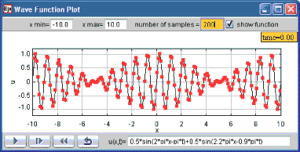

[The Wave Function Plotter shows a wave function u(x,t) which varies in space and time.]
A wave is a disturbance, such as sound, that propagates through space. For a wave propagating in one dimension, we use a wave function u(x,t) to represent the wave at position x and time t as shown in the screen shot. Although a sinusoidal wave function is a very common type type of disturbance, we should remember that there are many other wave functions, such as shock waves, that do not fit this functional form.
The model's fixed relations workpanel computes the data by evaluating the parser in the EJS Function element the using the following code:
double dx = (xmax-xmin)/n;
// sample interval
double x=xmin+dx/2;
// position
_view.trail.clear();
// clear old data
for(int i=0; i<n; i++) {
// loop to create new data
double u = _view.waveFunction.evaluate(x,t); // evaluate wave function
_view.trail.addPoint(x,u);
// add data to trace
x += dx; // increment position
}
The following EJS models demonstrate how to plot functions in EJS. These models are listed in order of complexity.
The Wave Function Plotter model was created by Wolfgang Christian and Francisco Esquembre using the Easy Java Simulations (EJS) version 4.1 authoring and modeling tool. You can examine and modify a compiled EJS model if you run the model (double click on the model's jar file), right-click within a plot, and select "Open Ejs Model" from the pop-up menu. You must, of course, have EJS installed on your computer. Information about Ejs is available at: <http://www.um.es/fem/Ejs/> and in the OSP ComPADRE collection <http://www.compadre.org/OSP/>.